Social Data Science
Statistical Reasoning: Interpreting Patterns in Data
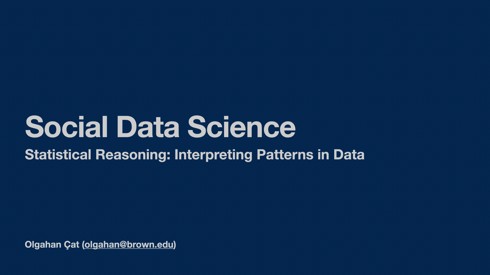
Goals
- Find out whether data automatically tells us what is true or not
- Identify patterns in data and describe what they show
- Distinguish descriptive, predictive, and causal claims
- Ask better questions when someone makes a data-based claim
Why statistical reasoning matters?
- Intellectual skill: Reason carefully about patterns in human behavior
- Academia: Read, interpret, and contribute to social science research
- Policy: Evaluate evidence behind decisions that affect society
- Private sector & life: Use data responsibly to anticipate outcomes
“According to data…”
Does data speak?
- Common claims:
- “The data says X causes Y”
- “According to data, A is better than B”
- Implied: data reveals objective truth
- Reality: data requires interpretation
Variables
- Characteristics that vary
Types of Variables
- Nominal/categorical: Cannot be ordered
- Region
- Ordinal: Ordered
- Very liberal < Liberal < Moderate < Conservative < Very conservative -Numerical: Ordered + equidistant
- Age, GDP, number of casualties
Practice
Varieties of Democracy’s regime type measure:
- 0: Closed autocracy – No multiparty elections
- 1: Electoral autocracy – De-jure elections but not free and fair
- 2: Electoral democracy – Free and fair elections with some flaws
- 3: Liberal democracy – Free and fair elections guaranteed
Political Regimes
Interactive Map
Descriptive Statistics
Summarizing Patterns: Categorical data
- Counts / frequencies: How many observations fall in each category.
- Percentages / proportions: Useful to compare groups.
- Mode: The most common category
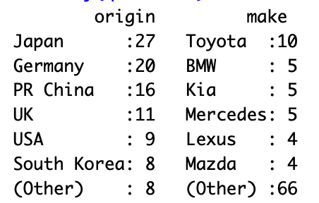 Source: qatarcars
Descriptive Statistics
Summarizing Patterns: Numerical data
- Measures of central tendency:
- Mean (average): Add values, divide by count
- Median: Middle value when ordered
- Mode: Most common value
- Measures of spread / variability:
- Range: Difference between max and min
- Standard deviation
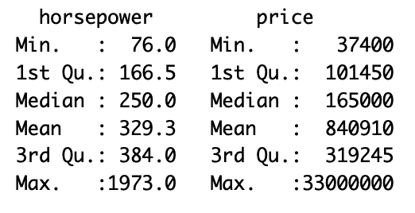 Source: qatarcars
Predictive Reasoning
Can we forecast outcomes?
- Use patterns to predict an outcome
- Example: Next election, would we expect a high or low turnout at a university town?
- What if we want to know why?
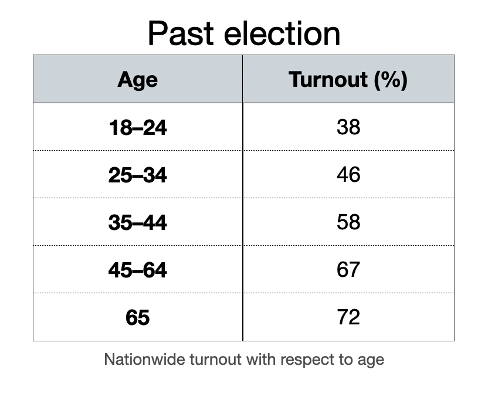
Causal Inference
Does X cause Y?
- X: Independent variable
- Y: Dependent variable
- Causal claims are everywhere
- The ultimate question:
- does changing X change Y
Do democracy promotion programs reduce protests?
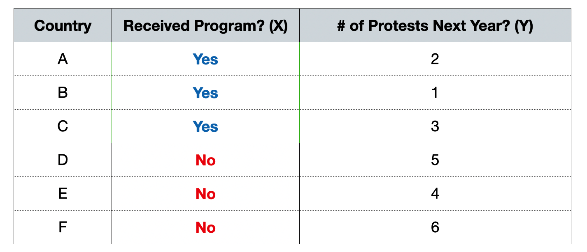
- Average protests if received program: (2+1+3)/3 = 2 → fewer protests
- Average protests if no program: (5+4+6)/3 = 5 → more protests
- what if we knew both worlds?
Counterfactuals
What would Y be if X did not change/take place?
- If Trump did not win 2024 elections, would Maduro still be in power?
- If it wasn’t for Qatar, would Messi ever win the World Cup?
Potential Outcomes & Counterfactuals
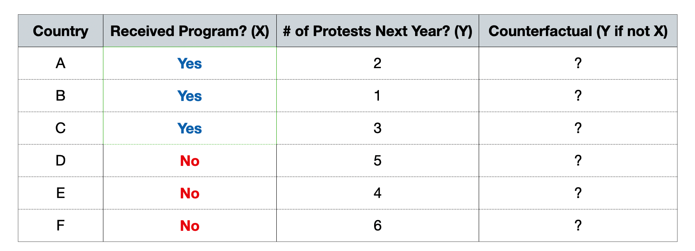
- Going back to the example, we do not know the counterfactuals.
- But let’s assume we do know them…
Potential Outcomes & Counterfactuals
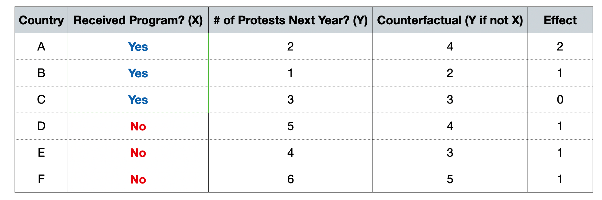
- Average effect for countries that received program: (2+1+0)/3 = 1
- Average effect for countries that did not receive program: (1+1+1)/3 = 1
Causal Inference
Does a change in X cause a change in Y?
- Patterns alone are not enough
- Observations that are treated and not treated tend to be systematically different: Selection bias
- Without counterfactuals, it is difficult to make causal claims
How do we detect counterfactuals?
Bad news: we can’t
Bad news: we can’t
Fundamental Problem of Causal Inference: We never observe the counterfactual
Good news: we can predict them
Good news: we can predict them
Causal inference = imputing the counterfactual and estimating the effect
Imputing the counterfactual
- Qualitatively
- Case studies
- Quantitatively
- Experiments
- Observational studies
Experiments
Gold standard
- Random assignment ensures no selection bias
- Isolate the effect of X on Y
Let’s think about this intuitively
An example from a field experiment in Pakistan (Cheema et al. 2022)
- How can we close persistent gender gaps in political participation?
- Male household members as “gatekeepers” of women’s participation
- Targeting women -> no effect
- Targeting male household members -> increase in women’s turnout
Let’s think about this intuitively
An example from a field experiment in Pakistan (Cheema et al. 2022)
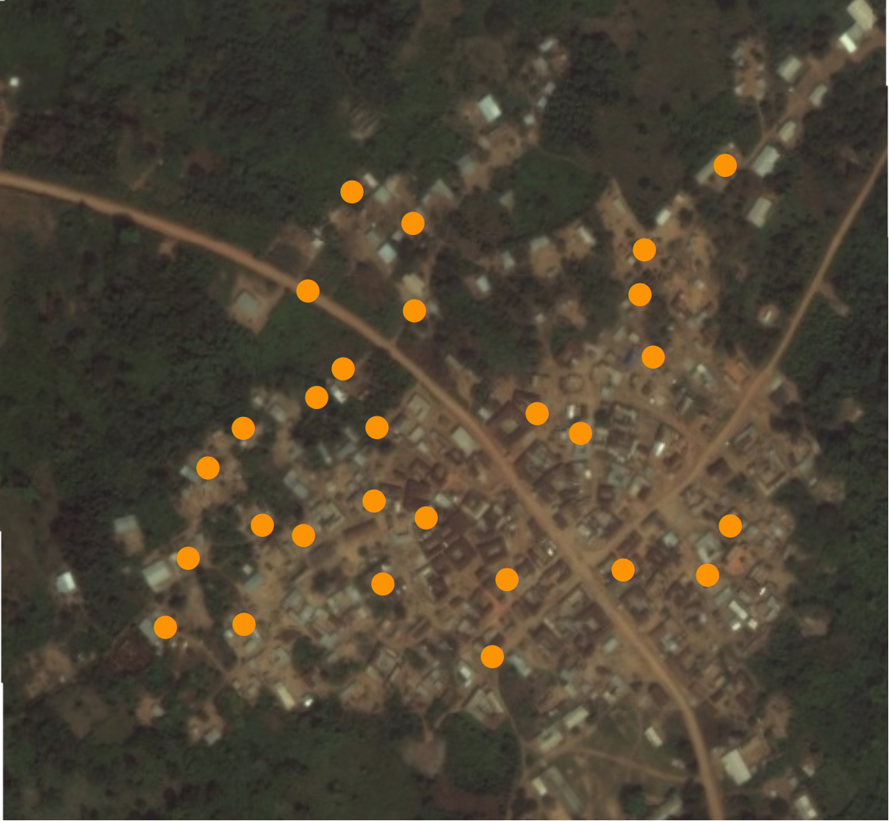
Figure: A random sample of households in Pakistan
Let’s think about this intuitively
An example from a field experiment in Pakistan (Cheema et al. 2022)
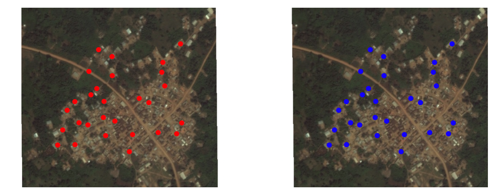
Figure: Each household has potential outcomes treated and control
Let’s think about this intuitively
An example from a field experiment in Pakistan (Cheema et al. 2022)
When you assign a household to treated, you are realizing the household’s potential outcome under treatment
When you assign a household to control, you are realizing the household’s potential outcome under control
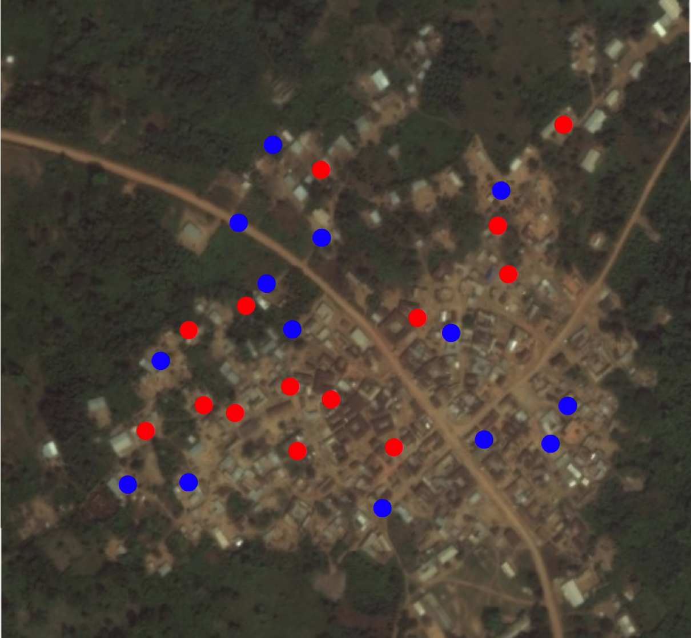
Let’s think about this intuitively
An example from a field experiment in Pakistan (Cheema et al. 2022)
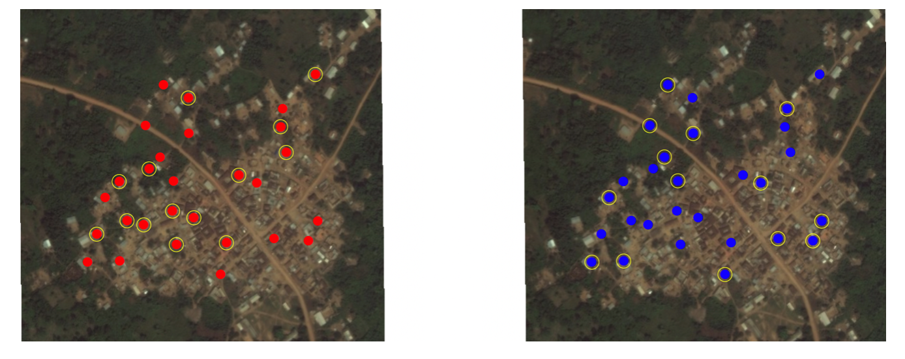Random assignment to treated or control means we’re drawing a random sample of these potential outcomes
Exercise
An example from a field experiment in Pakistan (Cheema et al. 2022)

Exercise
An example from a field experiment in Pakistan (Cheema et al. 2022)
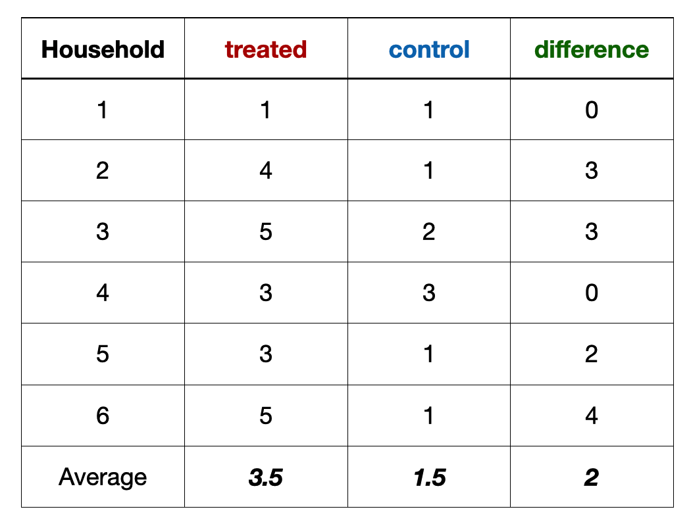Exercise
An example from a field experiment in Pakistan (Cheema et al. 2022)
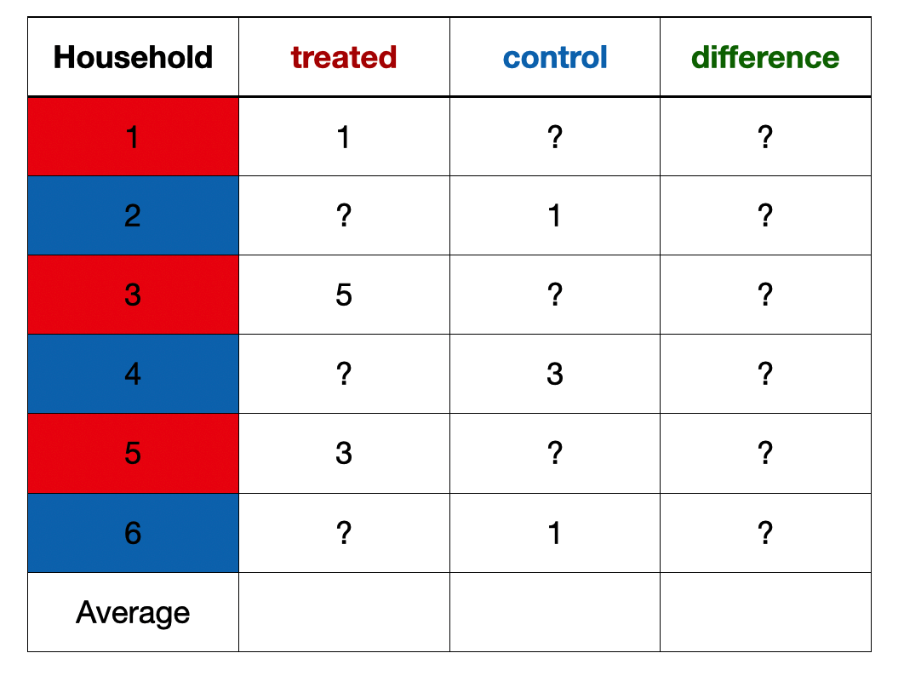Exercise
An example from a field experiment in Pakistan (Cheema et al. 2022)
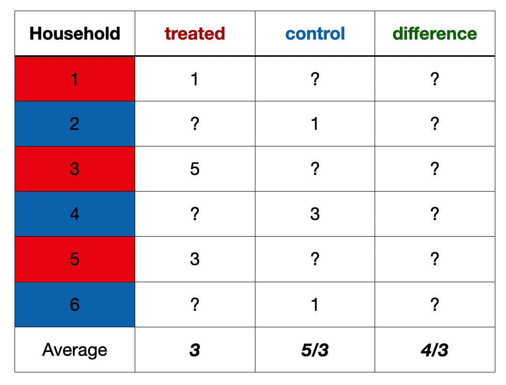Experiments
Limitations
- Why not run experiments for everything?
- Practical constraints
- Cost, time, scale
- Feasibility
- Cannot randomly assign many social conditions
- Ethical considerations
- Harm, consent, fairness
- Practical constraints
Observational Designs
When we cannot run experiments
- Many social questions cannot be randomized
- Democracy, migration, welfare, education
- Policies are not supposed to be not assigned at random
- Welfare is not given to the rich
- This creates selection bias
Matching
Comparing similar units
Idea: Compare units that are similar in important ways, except for whether they received the treatment
Example: Do UN peacekeeping missions reduce civilian deaths?
- Problem: Peacekeepers are sent to more violent conflicts
- Solution: Compare conflicts with similar violence levels
- Some with peacekeepers | some without
Discontinuity Designs
Comparing units near a cutoff
Some policies use clear rules or thresholds
- Elections, Welfare programs
Example: Does tutoring improve student performance?
Problem: Students who do and do not get tutoring may already be different
Policy: Students scoring 70 or below get tutoring
- Compare students just below and just above 70
Discontinuity designs
Compare units around a threshold
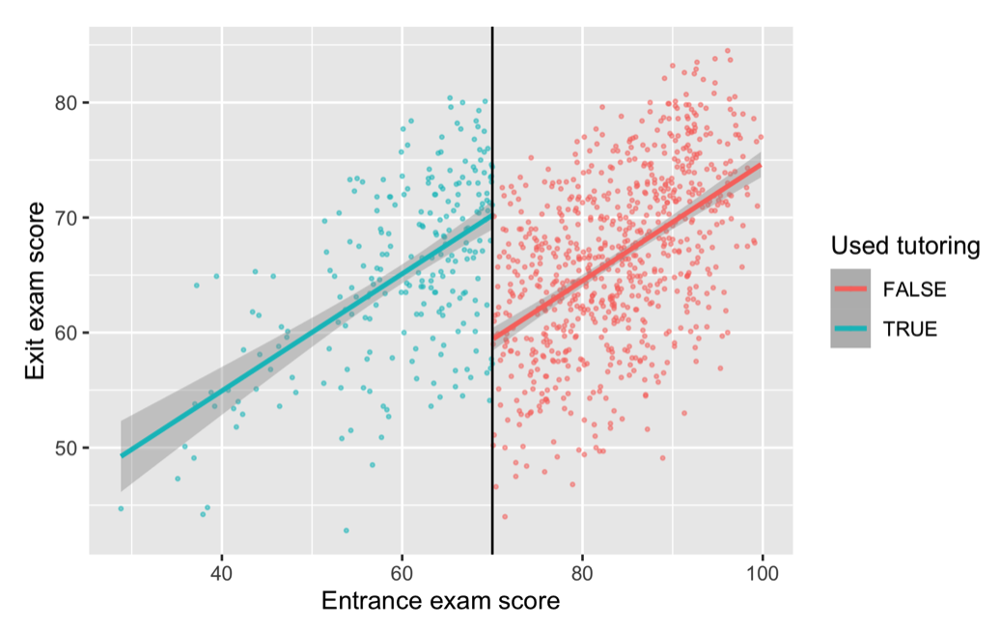Source: Andrew Heiss
Difference in Differences
Comparing changes over time
- Idea:
- Compare how outcomes change over time between a treated group and a similar control group
- Focus on differences in trends, not levels
Difference in Differences
Comparing changes over time
- Example: How do sanctions affect human rights violations?
- Two countries:
- One sanctioned (treated)
- One not sanctioned (control)
- Key assumption:
- Both countries followed similar trends before sanctions
- Two countries:
Difference in Differences
Compare units that follow similar trends the treatment
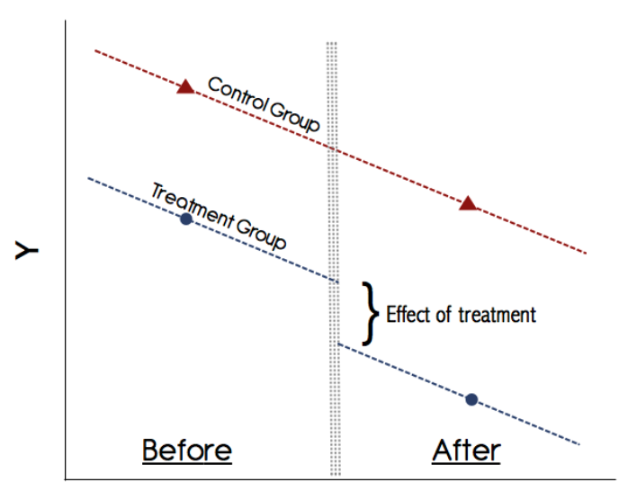Source: Kevin Goulding
Other designs for observational data
- Instrumental variable
- Synthetic control
- Shared goal: imputing the counterfactual using appropriate the design
Takeaways
Why statistics matters
- Data don’t speak for themselves: they are produced, measured, and interpreted by humans.
- Statistical reasoning is powerful: bad data, poor comparisons, or naive interpretation can mislead.
Takeaways
Why learn?
- Policy relevance: make sense of interventions and their consequences.
- Social science literacy: read and critique academic research confidently.
- Real-world decision-making: informed skepticism is a marketable skill anywhere data are used.
Thank You
Questions & Discussion
- Thank you for your attention!
- Feedback, questions, connections: olgahan@brown.edu